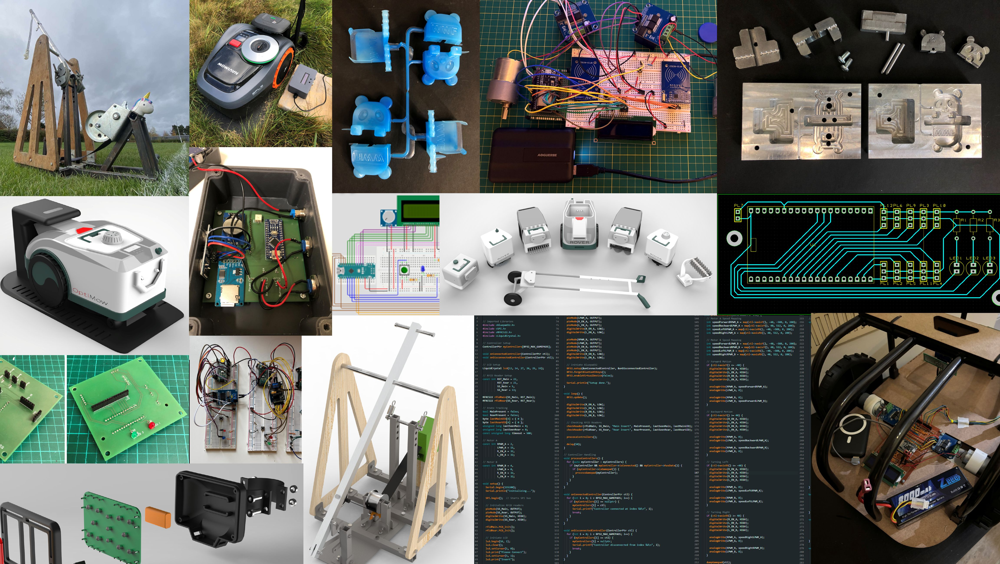

Electronics Engineer
Contact Me
I'm a creative, technically driven Electronics Engineer with hands-on experience in mechanical, electronic, and software integration. With a 2:1 in Product Design & Technology from Loughborough University, I've built strong design, prototyping, and problem-solving skills through projects ranging from Bosch robotic lawn mowers to classic car restorations and marine engineering. I'm proficient in PCB design, C++, 3D CAD, and product testing, and enjoy collaborating in multidisciplinary teams. I'm passionate about developing innovative, well-crafted products that blend technical precision with practical design.